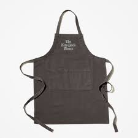
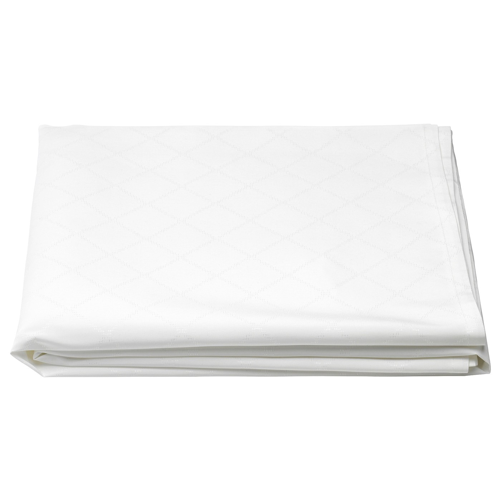
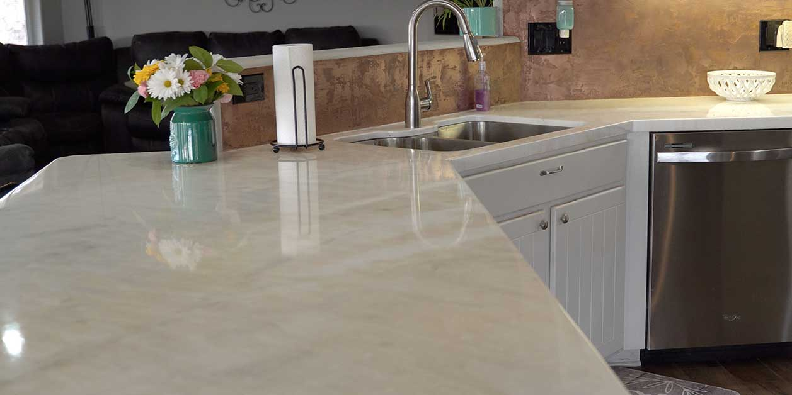
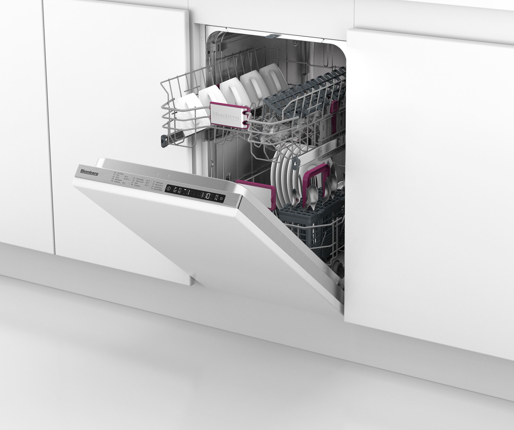
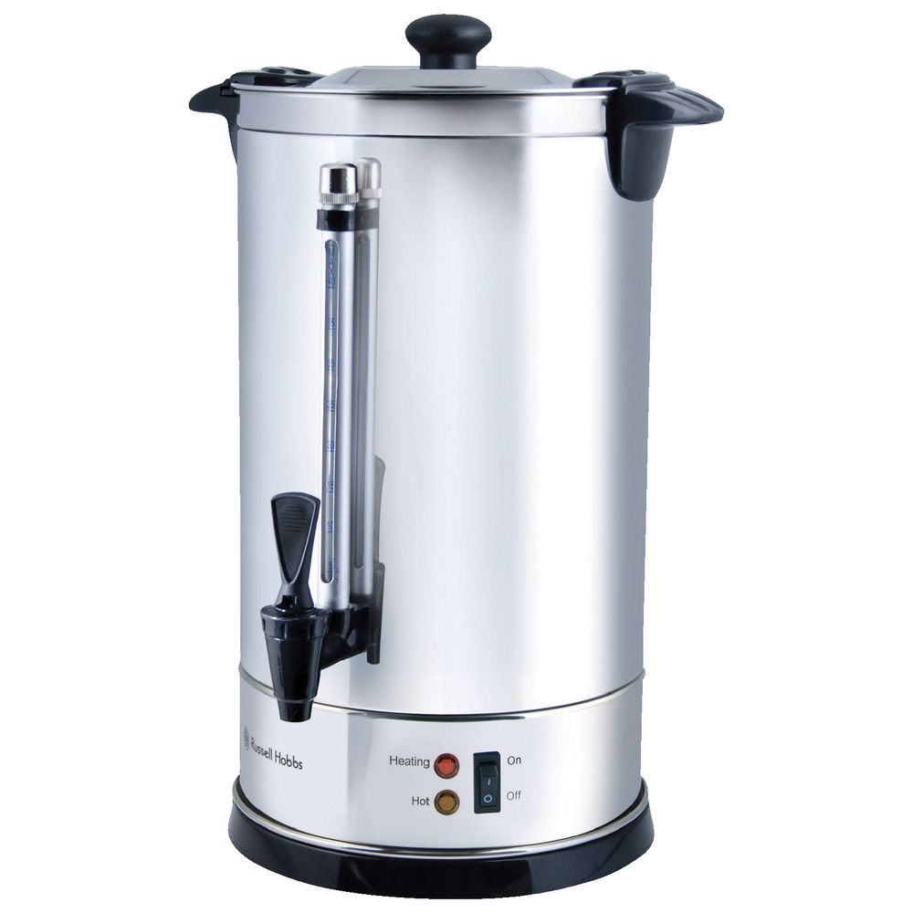

Эрев Песах
РУКОВОДСТВО ПО ЭРЕВ ПЕСАХУ, выпавшему на шаббес
Автор: раввин Довид Хебер
Примечание: эта статья изначально была написана для Kashrus Kurrents 2001 и отредактировано для Руководства по пасхе
2021 года. Галохос применяются всякий раз, когда Эрев Песах приходится на Шаббес. Следующие события произойдут в 2025
году, а затем не раньше 2045 года.
Многие из нас хорошо знакомы с обычным распорядком Эрев Песах: бхорим присоединяются к сиюму, хомец сжигается, и мы
готовимся к седеру. Однако время от времени Эрев Песах приходится на Шаббес, и мы должны изменить наш распорядок.
Давайте рассмотрим галохос в Шаббес Эрев Песах.
Четверг - Таанис Бехорим / Бедикас Хомец
В обычный Эрев Песах первенцы мужского пола (бехорим) обязаны поститься. В этом году пост перенесен на четверг. Те бехорим, которые не хотят поститься, должны присутствовать на сиюме. В четверг вечером после цейс хакохавим (с наступлением темноты) следует немедленно совершить бедикас хомец. Читаются браха и кол хамира (как обычно).
Пятница - Эрев Шаббес
Хомец, необходимый для приема пищи в пятницу вечером и в субботу утром, следует поместить в одноразовый контейнер
подальше от всей еды в Песах. Хотя хомец можно покупать и есть в течение всего дня пятницы, по обычаю хомец продают и
сжигают до конца времени сжигания биур хомец (то есть до конца 5-го галахического часа дня), (В этом году в Киеве - 10:59) соответствующего тому времени, когда это
время наступает в настоящий день. Последующее сожжение могло привести к путанице в последующие годы. Коль
Хамира не произносится во время сжигания. К этому времени все кейлим лехатхила следует откашеровать. Беди'эвед можно кашеровать
кейлим до зажигания свечей в пятницу.
В Эрев Шаббес следует приготовить для Седера следующие вещи: запечь яйцо и з'роа(ножку, горлышко или шейку), проверить и очистить листья салата,
измельчить орехи для харосета и натереть хрен. Блюда, приготовленные на Шаббес и Йом Тов, должны быть кошерными на Песах и
готовиться в посуде для Песаха.
После полудня в обычный Эрев Песах нельзя выполнять различные мелохос (например, бритье, стирать белье).
Эти
галахос не применяются в этом году, поскольку Эрев Шаббес на самом деле не Эрев Песах.
Вечер пятницы и день субботы
Все блюда, кроме Хамоци, следует есть на посуде Песахдиг. Эту посуду нельзя класть на стол до тех пор, пока не будут убраны все крошки. Как вариант, можно использовать одноразовую посуду. Порядок приготовления Хамоци для всех трапез в Шаббат следующий:
- Положите лехем мишне на салфетки на столе. На столе вместе с булочками не должно быть кошерной на Песах посуды.
- Осторожно съешьте халос над салфетками, чтобы оставшиеся крошки можно было завернуть в салфетки и смыть.
- Желательно использовать небольшие свежие халос для лехем мишне (свежие халос оставляют меньше крошек).
- Очистите стол от всего хомца.
- Выбросьте все одноразовые предметы (например, пластиковую скатерть, тарелки), использованные при приготовлении хомеца, в мусорное ведро.
- Подавайте остальные блюда в кошерной на Песах или одноразовой посуде.
- Детям, которые могут оставить крошки, можно использовать "богатую" мацу. Поскольку использование "богатой" мацы является предметом споров, взрослым следует использовать халос для лехем мишне.
- После благословения хамоци и съедания более одной кабеци (т.е. более двух кезейсим) хал, взрослые могут есть "богатую" мацу до конца времени ахилас хомец. (В этом году в Киеве - 9:57 )
- В Шаббат Эрев Песах обычную мацу нельзя есть никому, кроме детей младше шести лет.
Если кто-то не хочет есть хлеб в помещении, он может есть на улице на крыльце или на заднем дворе (если там разрешено носить с собой, то есть в решус аёхид). Прочтите Хамоци, съешьте халос, затем сметите крошки со стола. Крошки нельзя бросать по ветру или за пределы эрува. Другой вариант, покушайте над салфеткой, и после заверните оставшиеся крошки и смойте, как указано выше. Можно доедать внутри. Биркас Амозон следует читать там, где ели хлеб.
Субботняя утренняя трапеза
Шахарис Шаббеса следует начинать раньше, чем обычно, потому что нужно съесть лехем мишне и доесть
весь хомец до конца времени ахилас хомец (то есть до конца четвертого галахического часа дня)(В этом году в Киеве - 9:57 ).
Выбросив весь хомец, нужно прочитать ту же самую "Кол хамира", которая обычно произносится при сжигании хомца. Это должно
быть сделано до конца времени сжигания хомца (окончание 5-го галахического часа)
(В этом году в Киеве - 10:59) . Его читают, даже если он уже был произнесен по
ошибке в пятницу во время сжигания хомца.
После этого можно продолжить трапезу и читать «Биркас амозон».
Субботняя Сеуда Шлишис
Во время сеуда шлишис в обычную субботу, человек должен иметь лехем мишне и лехатхила съесть больше, чем кебейца (то есть более двух кезейсим) халос после времени Минха Гедола (1/2 галахического часа после полудня). ). В эту субботу нельзя есть хлеб или мацу в это время. Каково решение? Во время полудня следует есть «другие продукты», такие как рыба, фрукты или лепешки Шехаколь (лепешки, приготовленные только из картофельного крахмала) в любое время между Минха Гедола и закатом. Однако, если кто-то ест эти продукты после начала десятого часа, следует быть особенно осторожным, чтобы не съесть слишком много, что уменьшит его аппетит к Седеру. Те, кто следуют обычаю есть "геброкс" в Песах, могут употреблять приготовленные продукты, содержащие мацу (например, кнейдлах), если они съедены до 10-го часа дня. Запеченные продукты из мацы, в том числе пирожные, нельзя есть в любое время дня.
Разделение утренней трапезы
Если позволяет время, желательно «разделить утреннию трапезу», выполнив следующие действия:
- Прочтите Хамоци и съешьте больше кабейцы из хал.
- Прочтите Биркас Амозон и прогуляйтесь на улице.(или подождите 15-30 мин между трапезами)
- Затем помойте руки снова для сеуда шлишис и прочтите Хамоци.
- Будьте осторожны, чтобы закончить халы и выбросить крошки в указанное выше время.
Если кто-то «разделяет» утреннюю трапезу таким образом, он все равно должен съесть что-нибудь после Минха Гедола, как описано выше, чтобы выполнить мицву сеуда шлишис в предписанное время согласно большинству мнений.
Моцей Шаббат и Седер
Подготовка к Йом Тов и седеру не может начаться до окончания Шаббата (цейс акохавим)
(В этом году в Киеве - 19:12) . Как указывалось ранее, некоторые приготовления следует провести до Шаббата. Можно также накрыть стол для седера перед
Шаббатом и поесть на кухне в Шаббат, чтобы седер начался как можно раньше после Шаббата.
Кидуш и Авдала (ЯКНА'АЗ) читаются вместе на Седере, как напечатано в Агаде. Надо читать Борей
Меорей Аэш и использовать свечи Йом Тов, ставя их рядом в вертикальном положении. Их не следует наклонять
друг к другу. В качестве альтернативы можно читать браху, используя лампочку накаливания без матового
покрытия, которая была включена перед Шаббатом (или была включена таймером, установленным перед Шаббатом).
Во время седера есть одно изменение в Агаде: в брахе "Ашер Га'алону" перед вторым бокалом вина мы
изменяем порядок и произносим "мин хапесахим умин хазевахим" (вместо обратного порядка). Это связано с изменением
порядка принесения жертв, когда Песах наступает в Моцей Шаббат.
Мысли напоследок
Когда Эрев Песах наступает в Шаббат, это дает редкую возможность отдохнуть в Эрев Песах. Когда я был студентом в ешиве, я однажды сказал г-ну Хайману Флаксилу, исполнительному директору Ваад Хойр в Сент-Луисе, что, когда Эрев Песах наступает в Шаббес, приготовления настолько трудны. Он ответил: «Этот год - мой любимый год. Моя работа в области кашруса очень напряженная перед Песахом. В Шаббес, после отдыха, я могу прийти на Седер, чувствуя себя ментчем(человеком)! » Сегодня я точно понимаю, что он имел в виду. Пока мы все готовимся к Песаху, среди суматошного безумия, мы можем с нетерпением ждать праздника Эрев Песах, который дает нам особенный Йом Менуха.
Источник Star-KЗаконы лекарств
Каждый год выпускаются новые и новые списки кошерных лекарств на Песах. Как организация, которая занимается определением кошерности продуктов, мы вынуждены получать полную информацию по составу продукта, и даже после этого от нас требуется постоянно проверять производство, чтобы состав не был изменен. И для этого не всегда хватает простого звонка или письма. В случае составления списков кошерных лекарств обычно просто обзванивают компании — изготовители, или вообще берут информацию из интернета. Очевидно, что полагаться на такую информацию ни в коем случае нельзя. Как пример можно привести ситуацию с нашей организацией. Редакция одного из очень популярных списков кошерных продуктов сообщила про какой-то из продуктов, что он находится под наблюдением ОК, и что он только «китниет», а на самом деле он был «хомец»... Из выше сказанного хочется напомнить, что все ситуации необходимо обсуждать с лечащим врачом и компетентным в вопросах Пейсаха раввином. Особенно в серьезных заболеваниях...
Правила касающиеся использования лекарств на Песах
Все ниже перечисленное справедливо только в том случае, если нет возможности заменить на лекарство не содержащее хомца.
1. Лекарства в виде таблеток, капсул, капель, мазей, инъекций(уколы) и т. д.
Лекарства, которые не имеют приятного вкуса или не принимаются внутрь, даже если они имеют в себе хомец разрешены для использования, т. к. не являются едой и не пригодны для еды. Капсулы имеют отдельную проблему, что они могут быть сделаны из не кошерных составляющих. Поэтому можно их принимать или завернув в салфетку или бумажку, или высыпав содержимое и использовав его без капсулы. Однако надо узнать у врача, можно ли так сделать, т. к. иногда капсула для того и нужна, чтобы лекарство не попадало напрямую в желудок.
2. Сиропы, таблетки с вкусом и т. п.
Обычно содержат хомец и вкус радует человека, поэтому принимать запрещено.
3. Специальные помады
Разрешены.
Необходимо помнить, что следует купить часто используемые лекар-ва в разрешенной форме до Пейсаха и не полагаться на «а вдруг не понадобиться». Также необходимо помнить, что в случае нужды для ребенка, если нет возможности найти в данный момент замену нужному лекарству, МОЖНО И НУЖНО дать сироп или другое подобное лекарство. Это касается как опасности для жизни, так и в сомнительной ситуации(высокая температура(39 и выше)без явной причины) Также в случае, когда уже начат курс лечения, ни в коем случае не стоит менять самостоятельно лекарство без обсуждения с лечащим врачом. И хочется привести историю с выше процитированной статьи: Рав Бакши Дорон, в свое время главный раввин Израиля, будучи на собрании раввинов Европы рассказывал о молодом человеке, который не хотел принимать в Пейсах определенное лекарство, которое могло иметь хомец, и с похорон которого рав только приехал на собрание. Поэтому во всех вопрос ни в коем случае нельзя устражаться без обсуждения с раввином. Я постарался привести самые распространенные вопросы, однако все же следует обсудить, по возможности, со своим раввином не полагаясь на приведенное здесь. Также необходимо знать, что здесь приводится только сухой закон, и у многих принято устражаться в вопросах помад, некоторых кремов и т. д.
Кошерование посуды
Как сделать кошерную кухню на Песах?
Можете перейти по этим ссылкам или просто прокрутить вниз
- Фартук
- Столешница
- Посудомоечная машина
- Электрический миксер
- Тканевые изделия
- Полки для еды
- Морозильник
- Детский стульчик
- Термопот/Кипятильник
- Кофеварка
- Кухонные прихваты
- Микроволновая печь
- Духовка
- Кладовая
- Кастрюли
- Холодильник
- Столовое серебро
- Раковина
- Смеситель для раковины
- Маленькая посуда
- Плита
- Стол
- Скатерть
- Кулер
Детский стульчик
1. Протрите сиденье, подножку и перекладины мыльной тряпкой.
2. Накройте лоток контактной бумагой.
Духовка
Духовки с самоочисткой
1. Удалите видимые продукты.
2. Завершите цикл самоочистки вместе с решетками.
Несамоочищающаяся духовка
1. Тщательно очистите все поверхности (стены, пол, двери и стойки).
с сильно едким очищающим средством.
Обратите особое внимание на термостат, окошко духовки,
и края камеры печи.
Темные пятна, не выступающие над поверхностью не нужно удалять.
2. Духовку нельзя использовать в течение 24 часов.
3. Поставьте решетки в духовку и включите духовку на самый сильный огонь в течение 60 минут.
Примечание 1: не следует использовать противни или решетки, которые находились в прямом контакте с пищей.
Примечание 2: Метод кошерования, описанный выше, основан на постановлении Рава
Aharoна Котлера zt ”l. Однако рав Моше Файнштейн постановил, что печь должна
кошероваться с паяльной лампой. Проконсультируйтесь
с вашим раввином как следует поступить в вашей общине.
Кастрюли, столовое серебро и другая небольшая посуда
1. Посуду необходимо тщательно очистить и не использовать в течение 24 часов.
В случае, если в месте стыков (напр: между ручками и кастрюлей, рукояткой ножа и лезвием и т.п.) невозможно очистить -
не следует проводить кошерование.
2. Через 24 часа погрузите посуду в кастрюлю с кипящей водой на огне.
• Кастрюля может быть не пасхальной, если она чистая и не
использовалась в течение 24 часов, а затем вскипятили воду один раз в кастрюле и
вылили.
• Небольшую посуду следует погружать отдельно (не вместе).
• Более крупные предметы можно погружать в воду часть за частью (напр: черпак можно окунуть сначала емкость, а затем перевернуть и окунуть ручку,
однако следует следить, чтобы никакая часть предмета не осталась не откошерованной).
3. Дайте воде снова закипеть, прежде чем положить в кастрюлю следующий предмет.
4. После погружения ополосните посуду в холодной воде.
Примечание 1: Загнутые кромки, швы или трещины, которые невозможно очистить, потребуют обработки паяльной лампой
перед кипячением. (как уже указывалось выше, следует избегать кошерования таких предметов без консультации с Равом)
Примечание 2: Металлические чайники необходимо кошеровать, как и любой другой чайник.
Хотя в чайник редко наливают что-либо, кроме воды,
тем не менее, его необходимо кошеровать. Чайники часто стоят на плите, и это обычное дело,
чтобы их обрызгали горячей пищей.
Морозильная камера, Холодильник, Кладовая и Полки для продуктов
1. Тщательно очистите, уделяя особое внимание краям, где могут застрять крошки.
2. Выстелите все поверхности бумагой или пластиком. (Примечание: холодильники и
морозильники будут работать более эффективно, если в подкладке будут проделаны отверстия, для свободного потока
воздуха.)
Кофеварка
1. Проконсультируйтесь с вашим Равом.
Кулер
1. Полейте на кран кипятком на 10 секунд.
2. Залейте кран кипятком на 10 секунд.
Кухонные прихваты
См. Раздел «Изделия из ткани» выше.
Изделия из ткани
1. Удалите все прилипшие куски еды.
2. Постираййте белье с моющим средством в стиральной машине, установленной на «горячую».
3. После этого необходимо проверить предметы, чтобы убедиться, что на них не осталось кусков пищи.
Фартук
См. Раздел «Изделия из ткани» выше.
Скатерть
См. Раздел «Изделия из ткани» выше.
Столешница
Столешницы из керамической плитки
Накройте столешницу водостойким покрытием, например пластиком или клеенкой. (Сама столешница не подлежит кошерованию; следовательно, это должно быть покрыто.)
Пластиковые столешницы
Существуют разные мнения о том, можно ли кошеровать столешницу из пластика на Песах. Проконсультируйтесь со своим Равом. Накройте столешницу водостойким покрытием, например пластиком или клеенкой.
Гранит, композитный камень (например, кварц) или нержавеющая сталь
Желательно откошеровать столешницу, поливая кипятком вместе с раскаленным камнем(кирпичем). Для кошерования с раскаленным камнем(кирпичем): прикрепите камень к зажиму и нагрейте камень. Поливая кипятком на стойку, перемещайте камень по стойке с кипящей водой так, чтобы вода снова нагрелась на поверхности стойки. Камень, возможно, придется нагреть на плите несколько раз, так как он быстро остынет.
Посудомоечная машина
Проконсультируйтесь с Равом, поскольку чистка посудомоечных машин - это сложный процесс.
Электрический миксер
Из-за сложности очистки корпуса миксера от мелких частиц муки, не следует использовать его на Песах. Насадки миксера, однако, можно чистить и кошеровать путем кипячения (см. «Посуда» ниже).

Термопот/Кипятильник
Используется только для нагрева воды
Откройте горячую воду из крана в течение 10 секунд, одновременно поливая кипятком из другого чайника сверху на кран.
Используется для разогрева пищи (например, для разогрева халы):
Надо убрать и не использовать в Песах.
Микроволновая печь
Для тех, кто кошерует пластик. (Тем кто не кошерует пластик следует убрать микроволновку на Песах.)
1. Тщательно очистите и не используйте в течение 24 часов.
2. Снимите стеклянный вращающийся поднос и замените его новой кошерной поверхностью для пасхальных праздников.
3. Через 24 часа наполните чашку из пенополистирола водой и прокипятите ее в микроволновой печи в течение 10 минут.
минут.
4. Наполните чашку снова и переместите ее в другое место. Прокипятите в микроволновке еще 10
минут.
5. Заклейте внутреннее оконное стекло картоном или липкой клеенкой на время Песаха.
Раковина
Раковина из нержавеющей стали
1. Уберите сливную решетку.
• Рекомендуется заменить сливную решетку на новый на Песах. Если это сложно, его можно использовать, если в сливной решетке есть большие
отверстия, которые можно полностью вычистить.
2. Сначала очистите раковину и не используйте ее в течение 24 часов.
• Желательно очищать раковину, поливая кипятком в сочетании с раскаленным камнем. Для кошерования с
раскаленным камнем: прикрепите камень к зажиму и нагрейте камень на плите. Поливая кипятком все
поверхности раковины, перемещайте камень вдоль раковины с кипящей водой так, чтобы вода снова нагрелась на поверхности
раковины. Камень может потребоваться повторно нагреть на плите несколько раз, поскольку он может быстро остыть.
• Вместо того, чтобы чистить раскаленным камнем, некоторые просто очищают раковину, поливая кипятком, а затем используя
фольгу (2-3 слоя, если обычная) или вставку (тазик) для раковины.
3. Через 24 часа наполните чашку из пенополистирола водой и прокипятите ее в микроволновой печи в течение 10 минут.
минут.
4. Наполните чашку снова и переместите ее в другое место. Прокипятите в микроволновке еще 10
минут.
5. Заклейте внутреннее оконное стекло картоном или липкой клеенкой на время Песаха.
Керамическая раковина
Керамическую раковину нельзя кошеровать, поэтому ее необходимо очищать и накрывать следующим образом:
1. Раковину нельзя использовать с горячей водой в течение 24 часов.
2. Уберите сливную решетку.
• Рекомендуется заменить сливную решетку. Если это сложно, а сливная решетка имеет большие отверстия, и ее можно полностью вычистить, то ее
можно кошеровать. Сливную решетку не следует использовать в течение 24 часов, ее следует залить кипятком из пейсаховского чайника.
3. Тщательно очистите раковину и убедитесь, что она полностью высохла.
4. Накройте раковину 2 или 3 слоями липкой клеенки или фольги. (Лучше всего приобрести
вставка для раковины вместо покрытия клеенкой или фольгой.)
Смеситель для раковины
1. Снимите все фильтры или форсунки.
2. Включите горячую воду и полейте кран кипятком сверху.

Плита
Электрическая плита
1. Хорошо очистите поверхность плиты и накройте фольгой.
2. Включите конфорки, на максимальный огонь до красноты.
Газовая плита
1. Хорошо очистите поверхность плиты и не используйте в течение 24 часов.
2. Накройте поверхность плиты фольгой.
2. Либо замените решетки на плите новыми на Песах, либо тщательно очистите и прокалите их с помощью
пояльной лампы.
Стеклянная плита
Стеклянную плиту нельзя кошеровать, поэтому с ней нужно обращаться следующим образом:
1. Хорошо очистите поверхность плиты и не используйте в течение 24 часов.
2. Во время Песаха кастрюли не следует ставить прямо на поверхность печи, а лучше ставить алюминиевый (или другой
металлический) диск прямо под кастрюли.
Не следует закрывать всю поверхность стеклянной столешницы, так как это может привести к ее перегреву и растрескиванию.
Стол
1. Тщательно очистите стол.
2. Накройте стол двумя слоями. Один из этих слоев должен быть
водонепроницаемые (напр: клеенка или пластик).